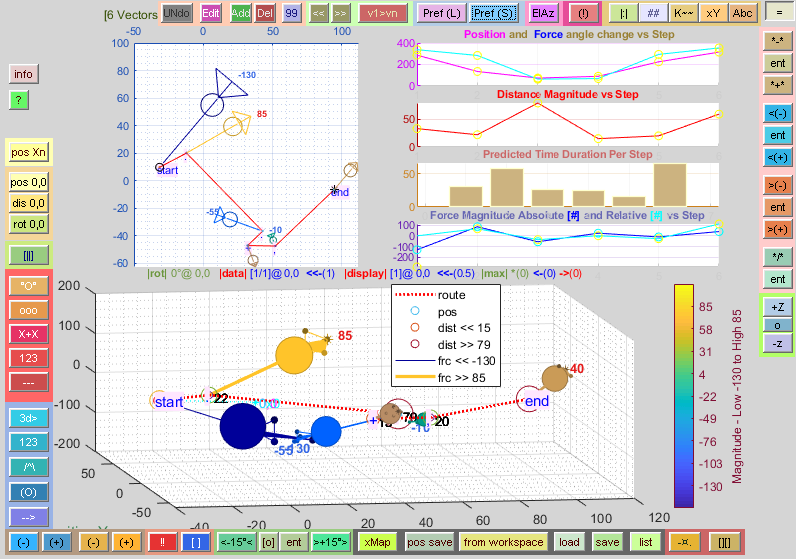

* My Twitter *
twitter.com/mathlottie
|
Quick Links to Lottie
Vectors project around the web
mathworks.com/matlabcentral/fileexchange/68588-lottie-vectors github.com/lottiemath/lottie_vectors/ sourceforge.net/projects/lottie-vectors/files/lottie_vectors_release_current/ * User Manual(s) * github.com/lottiemath/lottie_vectors/tree/master/instructions * Sample Vector Data Files * sourceforge.net/projects/lottie-vectors/files/test_data/ |
 Screen-shot from Lottie
Vectors 2.15
|
| Sample 3 Dimensional Data File The following vector data will produce 3 dimensional vectors in versions 2.15 and above. You'll need a version 2.2 or above to edit the data within the window.
|
|
| Lotte Vectors Viewer for
Windows! (32 and 64bit versions) This is a new veiwer which will release in version 1.0 before the end of February 2019, it enables you to view a 2 dimensional representation of a Lottie Vectors datafile. Though it won't come with all the features of the MatLab(r) version, it's a great application to simply view a file, and will work on most any Windows PC! Stay tuned, and come back again. I'll post the release on twitter as will all new updates! |
|